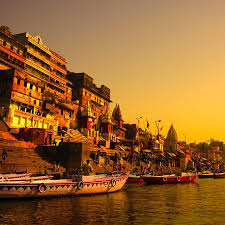
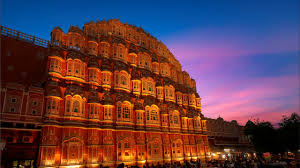
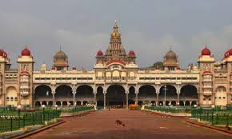
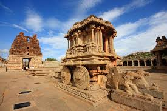
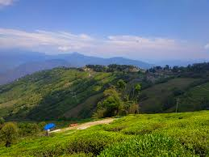
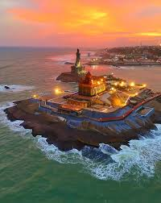
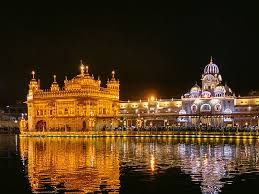
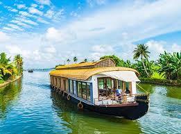
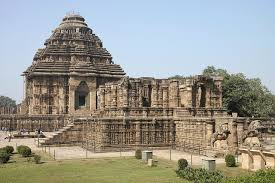
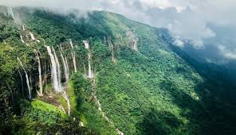

Class 7 Project Blog
Every individual has a special bond with their native place—the land where their roots lie, where traditions are nurtured, and where memories are deeply woven into the fabric of life. A native place is not just a geographical location; it is a reflection of culture, heritage, and identity. It represents the environment in which one’s ancestors lived, the customs they followed, and the values they passed down through generations.
Studying native places helps us understand the diversity of lifestyles, languages, and traditions across regions. It also highlights the importance of preserving local culture and respecting the environment that sustains communities. In today’s fast-paced world, revisiting our native places allows us to reconnect with our origins and appreciate the simplicity and richness of rural and traditional life.
This project aims to explore the significance of native places, their role in shaping personal and collective identity, and the lessons they offer in maintaining harmony between people, culture, and nature.
Understanding "Native Place"
The term native place is commonly used in Indian English to describe the town, city, or area a person is originally from. It refers to the place where a person’s family roots, culture, traditions, and identity are deeply connected. A native place is not only a physical location but also an emotional and cultural home that shapes a person’s values, lifestyle, and sense of belonging.
The location of a native place plays a vital role in shaping the lifestyle, traditions, and culture of its people. Whether situated in a bustling city, a quiet village, or a scenic countryside, the geographical setting influences the way communities live and interact with their environment.
Native places are often identified by their unique landscapes—mountains, rivers, forests, or fertile plains—that provide natural resources and define local occupations. For example, villages near rivers may depend on agriculture and fishing, while those in hilly regions may focus on farming, handicrafts, or tourism.
The people of a native place are the true essence of its identity. Their way of life, traditions, and values reflect the spirit of the community. Most native places are characterized by close-knit societies where people live with a strong sense of unity, cooperation, and respect for one another.
Culture in native places is often expressed through language, clothing, food, music, and festivals. Each region has its own unique customs that have been passed down through generations. For example, folk songs and dances are performed during harvest seasons, marriages, and local celebrations, while traditional attire showcases the craftsmanship and heritage of the area.
Varanasi, Uttar Pradesh – Famous for the Ganga ghats, Kashi Vishwanath Temple, and spiritual rituals.

Jaipur, Rajasthan – Known for Amber Fort, Hawa Mahal, and vibrant handicrafts.

Mysuru, Karnataka – Renowned for Mysore Palace, silk sarees, and Dasara celebrations.

Hampi, Karnataka – UNESCO site with Vijayanagara ruins, stone temples, and ancient architecture.

Darjeeling, West Bengal – Famous for tea plantations, toy train, and Kanchenjunga views.

Kanyakumari, Tamil Nadu – Special for the meeting point of three seas, Vivekananda Rock Memorial, and sunrise/sunset views.

Amritsar, Punjab – Golden Temple, Wagah Border ceremony, and rich Punjabi cuisine.

Kerala Backwaters – Houseboat rides, coconut groves, and serene waterways.

Konark, Odisha – Sun Temple with intricate stone carvings and dance festivals.

Shillong, Meghalaya – Waterfalls, music culture, and scenic hills.

Native places are not just locations on a map; they are the foundation of our identity, culture, and values. They shape who we are and influence the way we think, live, and connect with others.
Understanding and respecting native places helps us appreciate diversity, unity, and harmony among different communities. Protecting culture and nature is our responsibility for future generations.